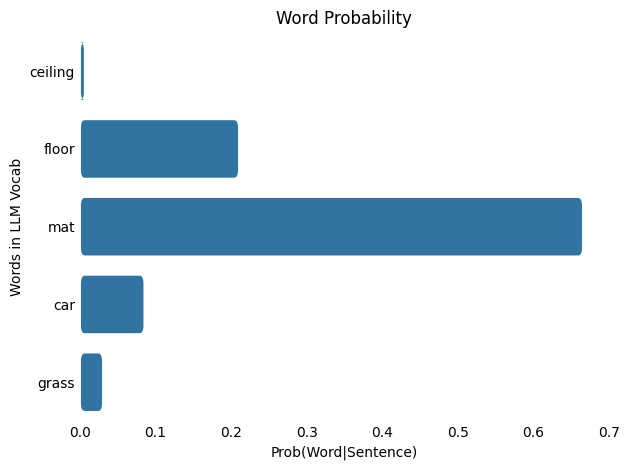
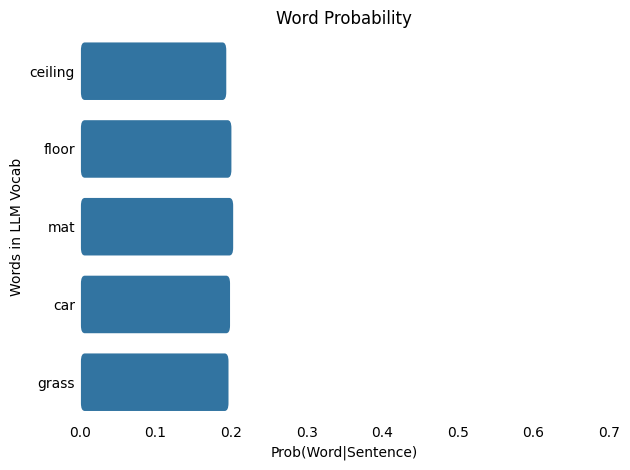
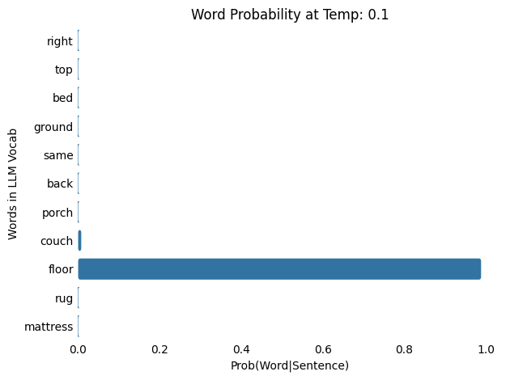
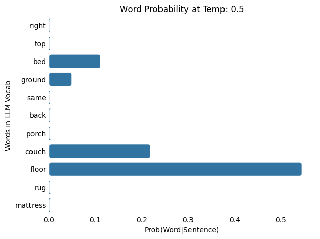
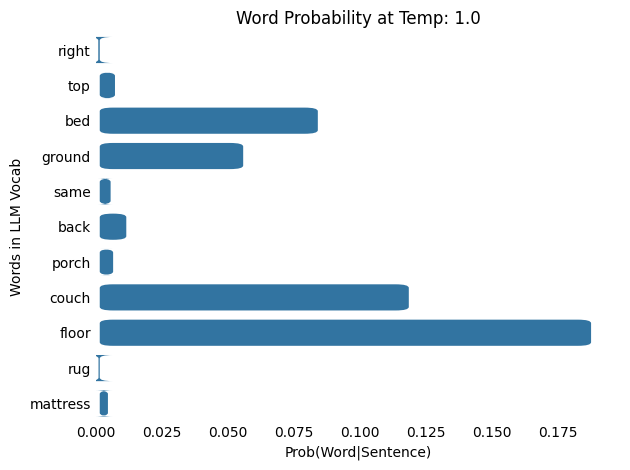
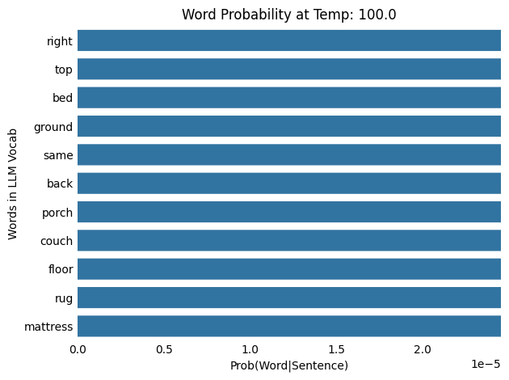

Why Does My LLM Have A Temperature?
Understanding the temperature parameter in LLMs
LLM
NLP
ML
Deep Learning
Math
Hugging Face
If you’ve interacted with AI assistants or LLMs (Large Language Models) in the past you may have noticed a parameter called Temperature.
Here we’ll look at how temperature affects LLM outputs, its calculation, and some examples of varying temperature values.
You can experiment with some small temperature changes across different LLMs here.
What exactly is an LLM’s Temperature?
LLM Temperature is a parameter that controls the probability distribution of the predicted next words of an LLM. It adds some randomness or variety to the LLM’s outputs by changing the likelihood of the next words being selected. It can influence the LLM’s outputs to be either more deterministic (predictable) or more stochastic (random). Parameters like temperature are used to simulate or mimic the inherent variation in human language generation.
In production, temperature values can typically range between 0-2+.
Lower temperature values (<1) can lead to more deterministic or predictable LLM outputs, referred to as making the LLM more “predictable”.
Temperature of 1 defaults to the LLMs inherent word distribution learned during training, reflecting the unaltered output of the Softmax function (more on this later).
Higher temperature values (>1) can lead to more stochastic or random and varied LLM outputs, referred to as making the LLM more “creative”. However, the term “creative” can be a misnomer since generating more varied output doesn’t necessarily equate to creativity.
When the temperature value is set to 0, most systems trigger greedy sampling for next word predictions, which simply takes the word with the highest probability in the vocabulary (Note: other sampling methods exist for text generation see here). In some cases, if the temperature value is too high (>>2) or too low (=0) this can trigger degenerate behavior like repetitive loops or LLM hallucinations.
Hallucinations in LLMs refer to outputs that seem plausible but are factually incorrect, or incoherent and nonsensical text. The term is metaphorically similar to how a person might perceive things that are not actually there or true.
It’s important to note that temperature values between 0 and 2 don’t eliminate hallucinations; instead, they introduce randomness and diversity into the outputs, which may increase or decrease hallucinations depending on context. To mitigate hallucinations, strategies like Retrieval-Augmented Generation (RAG), Chain of Thought (CoT), and other techniques can be employed to enhance the accuracy and coherence of LLM-generated text.

LLM Recap
Before diving deeper into the math, let’s take a simplified look at how LLMs work.
LLMs can be thought of as models that predict the next word based on patterns and associations they’ve learned from vast amounts of training data. During training, LLMs adjust their internal parameters through a process called backpropagation, learning patterns, syntax (arrangement of words), and meaning from vast amounts of text data.
Steps an LLM takes with input text:
- Tokenization: The input text is broken down into smaller units (tokens), such as words or subwords, allowing the model to handle variable-length inputs.
- Embedding: Each token is mapped to a unique numeric representation (using a lookup table or embedding layer), capturing semantic meaning.
- Encoding: The token embeddings are processed through multiple layers of the model (e.g., transformers), which create contextualized vector representations that understand the relationships between words in context.
- Logits Calculation: The decoder model (typically in autoregressive models like GPT) generates raw, unnormalized output scores (logits) for each token in the sequence, based on the processed input.
- Softmax Activation: The logits are passed through a softmax function, transforming them into a probability distribution over possible next tokens, representing the likelihood of each token being the next in the sequence.
- Word Selection: The model selects a word (or token) based on the probability distribution, typically by choosing the most likely token or sampling from the distribution for more diverse outputs.

The Math
The Softmax Function and Temperature
The Softmax function is a mathematical transformation that takes a vector of raw scores and converts them into a probability distribution. It does this by exponentiating each value and normalizing the results but the sum of all exponentiated values so that they sum to 1. Originally applied in physics and statistics around 1868, it was known as the Boltzmann or Gibbs distribution. The term “softmax” was coined in 1989 by John S. Bridle (Bridle, 1989, 1990).
In Natural Language Processing (NLP), the Softmax function is typically applied to the logits generated by an LLM to produce a probability distribution over possible next tokens. This distribution represents the likelihood of each token being the next word or subword in the sequence.
The Softmax function is defined as:
\[ \mathbf{Softmax}(x_i) = \frac{ \textcolor{None}{ e^{x_i} } }{ \textcolor{None}{ \sum_{j=1}^{N} e^{x_j} } } \]
Where:
- \(x_i\) value of each input (the logit value)
- \(e^{x_i}\) is the exponentiation of the value of each input (Euler’s number: \(e\) ~ \(2.71828\))
- \(\sum_{j=1}^{N} e^{x_j}\) is the sum of all the exponentiated (\(e\)) inputs (\(x\))
The Temperature (T) parameters is a simple modification to the Softmax function that adjusts the inputs:
\[ \mathbf{Softmax}(x_i) = \frac{ \textcolor{None}{ e^{ \frac{x_i}{ \textcolor{red}{T} } }}} { \textcolor{None}{ \sum_{j=1}^{N} e^{ \frac{x_j}{ \textcolor{red}{T} } } } } \]
The term “Temperature” is borrowed from the field of physics. It comes from its relationship to the Boltzmann distribution, which describes how energy states change with temperature. Early usage of the term “Temperature” in machine learning came from Ackley et al. (1985).
Examples
Example 1 - Simple Softmax Transformation without Temperature
Example
Given a list of numbers calculate their softmax probabilities.
- \(list = [2.0, 4.0, 3.0]\)
By Hand:
\[\begin{align} x &= [2.0, 4.0, 3.0] \\ \\ e^x &= [e^{2.0}, e^{4.0}, e^{3.0}] \\ \\ \sum_{i=1}^{n = 3} e^x &= e^{2.0} + e^{4.0} + e^{3.0} \\ \\ \mathbf{\text{Softmax}(x)} &= \left[\frac{e^{2.0}}{e^{2.0} + e^{4.0} + e^{3.0}}, \frac{e^{4.0}}{e^{2.0} + e^{4.0} + e^{3.0}}, \frac{e^{3.0}}{e^{2.0} + e^{4.0} + e^{3.0}}\right] \\ \\ &= [0.0900, 0.6652, 0.2447]\\\end{align}\]
Using Python:
Code
#Calculating Softmax
import torch
import torch.nn.functional as F
#1) Using Our Function
#Define a softmax function
def my_softmax(input_vector):
e = np.exp(input_vector)
return e / e.sum()
list_in = [2.0, 4.0, 3.0]
output = my_softmax(list_in)
print(f"\nThe softmax probabilities are: \n {output}")
#2) Using PyTorch Function
#Convert list to torch tensor
list_in_torch = torch.tensor(list_in)
output = F.softmax(list_in_torch, dim=0)
print(f"\nThe softmax probabilities (using Pytorch) are: \n {output}")
The softmax probabilities are:
[0.09003057 0.66524096 0.24472847]
The softmax probabilities (using Pytorch) are:
tensor([0.0900, 0.6652, 0.2447])Example 2 - Simple Softmax Transformation with Varying Temperatures
Example
Given a list of numbers calculate their Softmax probabilities at temperatures of T=[0.5, 1, 2]
- \(list = [2.0, 4.0, 3.0]\)
Temperature: 0.5
By Hand:
\[\begin{align} \text{Given:} \\ x &= [2.0, 4.0, 3.0] \\ \color{red}T &= 0.5 \\ \\ \\ \text{Softmax}(x_{i=1:3},{\color{red}T}) &= \frac{\color{steelblue}{ e^{\frac{x_i}{ \color{red}{T} }} } } {\color{purple}{ \sum_{j=1}^{N}{ e^{\frac{x_j}{ \color{red}{T} }} } } } \\ \\ \\ \text{The numerator:} \\ \color{steelblue}e^{x_i/\color{red}T} &= \left[\color{steelblue}{e^{x_1/\color{red}T}}, \color{steelblue}{e^{x_2/\color{red}T}}, \color{steelblue}{e^{x_3/\color{red}T}}\color{None}\right] \\ \color{steelblue}e^{x_i/\color{red}T} &= \left[\color{steelblue}{e^{2.0/\color{red}T}}, \color{steelblue}{e^{4.0/\color{red}T}}, \color{steelblue}{e^{3.0/\color{red}T}}\color{None}\right] \\ \color{steelblue}e^{x_i/\color{red}0.5} &= \left[\color{steelblue}{e^{2.0/\color{red}0.5}}, \color{steelblue}{e^{4.0/\color{red}0.5}}, \color{steelblue}{e^{3.0/\color{red}0.5}}\color{None}\right] \\ \color{steelblue}e^{x_i/\color{red}0.5} &= \left[\color{steelblue}{e^{{4}}}, \color{steelblue}{e^{{8}}}, \color{steelblue}{e^{{6}}}\color{None}\right] \\ \color{steelblue}e^{x_i/\color{red}0.5} &= \left[\color{steelblue}{54.6}, \color{steelblue}{2.98e+03}, \color{steelblue}{403}\color{None}\right] \\ \\ \text{The denominator:} \\ \color{purple}\sum_{j=1}^{N=3} e^{x_j/\color{red}T} &= \color{purple}{e^{x_1/\color{red}T}} + \color{purple}{e^{x_2/\color{red}T}} + \color{purple}{e^{x_3/\color{red}T}} \\ \color{purple}\sum_{j=1}^{N=3} e^{x_j/\color{red}T} &= \color{purple}{e^{2.0/\color{red}T}} + \color{purple}{e^{4.0/\color{red}T}} + \color{purple}{e^{3.0/\color{red}T}} \\ \color{purple}\sum_{j=1}^{N=3} e^{x_j/\color{red}0.5} &= \color{purple}{e^{2.0/\color{red}0.5}} + \color{purple}{e^{4.0/\color{red}0.5}} + \color{purple}{e^{3.0/\color{red}0.5}} \\ \color{purple}\sum_{j=1}^{N=3} e^{x_j/\color{red}0.5} &= \color{purple}{e^{{4}}} + \color{purple}{e^{{8}}} + \color{purple}{e^{{6}}} \\ \color{purple}\sum_{j=1}^{N=3} e^{x_j/\color{red}0.5} &= \color{purple}{54.6} + \color{purple}{2.98e+03} + \color{purple}{403} \\ \color{purple}\sum_{j=1}^{N=3} e^{x_j/\color{red}0.5} &= \color{purple}3.44e+03 \\ \\ \\ \text{Combine all:} \\ \text{Softmax}(x_{i=1:3},{\color{red}T}) &= \left[\frac{\color{steelblue}e^{x_1/\color{red}T} } { \color{purple} e^{x_1/\color{red}T} + e^{x_2/\color{red}T} + e^{x_3/\color{red}T} }, \frac{\color{steelblue}e^{x_2/\color{red}T} } { \color{purple} e^{x_1/\color{red}T} + e^{x_2/\color{red}T} + e^{x_3/\color{red}T} }, \frac{\color{steelblue}e^{x_3/\color{red}T} } { \color{purple} e^{x_1/\color{red}T} + e^{x_2/\color{red}T} + e^{x_3/\color{red}T} }\right] \\\\ \text{Softmax}(x, {\color{red}T}) &= \left[\frac{\color{steelblue}e^{2.0/\color{red}T}} { \color{purple} e^{2.0/\color{red}T} + e^{4.0/\color{red}T} + e^{3.0/\color{red}T} }, \frac{\color{steelblue}e^{4.0/\color{red}T}} { \color{purple} e^{2.0/\color{red}T} + e^{4.0/\color{red}T} + e^{3.0/\color{red}T} }, \frac{\color{steelblue}e^{3.0/\color{red}T}} { \color{purple} e^{2.0/\color{red}T} + e^{4.0/\color{red}T} + e^{3.0/\color{red}T} }\right] \\ \\ \text{Softmax}(x, {\color{red}0.5}) &= \left[\frac{ \color{steelblue} e^{2.0/\color{red}0.5}} { \color{purple} e^{2.0/\color{red}0.5} + e^{4.0/\color{red}0.5} + e^{3.0/\color{red}0.5} }, \frac{ \color{steelblue} e^{4.0/\color{red}0.5}} { \color{purple} e^{2.0/\color{red}0.5} + e^{4.0/\color{red}0.5} + e^{3.0/\color{red}0.5} }, \frac{ \color{steelblue} e^{3.0/\color{red}0.5}} { \color{purple} e^{2.0/\color{red}0.5} + e^{4.0/\color{red}0.5} + e^{3.0/\color{red}0.5} }\right] \\ \\ \text{Softmax}(x, {\color{red}0.5}) &= \left[\frac{ \color{steelblue} e^{ 4.0 }} { \color{purple} e^{4.0 } + e^{8.0 } + e^{6.0 } }, \frac{ \color{steelblue} e^{ 8.0 }} { \color{purple} e^{4.0 } + e^{8.0 } + e^{6.0 } }, \frac{ \color{steelblue} e^{ 6.0 }} { \color{purple} e^{4.0 } + e^{8.0 } + e^{6.0 } }\right] \\ \\ \text{Softmax}(x, {\color{red}0.5}) &= \left[\frac{ \color{steelblue} { 54.6 } } { \color{purple} 54.6 + 2.98e+03 + 403 }, \frac{ \color{steelblue} { 2.98e+03 } } { \color{purple} 54.6 + 2.98e+03 + 403 }, \frac{ \color{steelblue} { 403 } } { \color{purple} 54.6 + 2.98e+03 + 403 }\right] \\ \\ \text{Softmax}(x, {\color{red}0.5}) &= \left[\frac{ \color{steelblue}{ 54.6 } } { \color{purple} 3.44e+03 }, \frac{ \color{steelblue}{ 2.98e+03 } } { \color{purple} 3.44e+03 }, \frac{ \color{steelblue}{ 403 } } { \color{purple} 3.44e+03 }\right] \\ \\ \\ \text{Softmax}(x, {\color{red}0.5})&= [0.0159, 0.867, 0.117] \ \\ \text{Probabilities} &= [0.0159, 0.867, 0.117] \ \\\end{align}\]
Using Python:
Code
#Calculating Softmax
import torch
import torch.nn.functional as F
#1) Using Our Function
#Define a softmax function with temperature
def my_softmax(input_vector, Temp=1.0):
e = np.exp(np.divide(input_vector,Temp))
return e / e.sum()
Temp =0.5
list_in = [2.0, 4.0, 3.0]
output = my_softmax(list_in, Temp=Temp)
print(f"\nThe softmax probabilities at a Temp = {Temp} are: \n {output}")
#2) Using PyTorch Function
#Convert list to torch tensor
list_in_torch = torch.tensor(list_in)
# Apply temperature scaling
scaled_logits = list_in_torch / Temp
output = F.softmax(scaled_logits, dim=0)
print(f"\nThe softmax probabilities (using Pytorch) are: \n {output}")
The softmax probabilities at a Temp = 0.5 are:
[0.01587624 0.86681333 0.11731043]
The softmax probabilities (using Pytorch) are:
tensor([0.0159, 0.8668, 0.1173])Temperature: 1.0
By Hand:
\[\begin{align} \text{Given:} \\ x &= [2.0, 4.0, 3.0] \\ \color{red}T &= 1.0 \\ \\ \\ \text{Softmax}(x_{i=1:3},{\color{red}T}) &= \frac{\color{steelblue}{ e^{\frac{x_i}{ \color{red}{T} }} } } {\color{purple}{ \sum_{j=1}^{N}{ e^{\frac{x_j}{ \color{red}{T} }} } } } \\ \\ \\ \text{The numerator:} \\ \color{steelblue}e^{x_i/\color{red}T} &= \left[\color{steelblue}{e^{x_1/\color{red}T}}, \color{steelblue}{e^{x_2/\color{red}T}}, \color{steelblue}{e^{x_3/\color{red}T}}\color{None}\right] \\ \color{steelblue}e^{x_i/\color{red}T} &= \left[\color{steelblue}{e^{2.0/\color{red}T}}, \color{steelblue}{e^{4.0/\color{red}T}}, \color{steelblue}{e^{3.0/\color{red}T}}\color{None}\right] \\ \color{steelblue}e^{x_i/\color{red}1.0} &= \left[\color{steelblue}{e^{2.0/\color{red}1.0}}, \color{steelblue}{e^{4.0/\color{red}1.0}}, \color{steelblue}{e^{3.0/\color{red}1.0}}\color{None}\right] \\ \color{steelblue}e^{x_i/\color{red}1.0} &= \left[\color{steelblue}{e^{{2}}}, \color{steelblue}{e^{{4}}}, \color{steelblue}{e^{{3}}}\color{None}\right] \\ \color{steelblue}e^{x_i/\color{red}1.0} &= \left[\color{steelblue}{7.39}, \color{steelblue}{54.6}, \color{steelblue}{20.1}\color{None}\right] \\ \\ \text{The denominator:} \\ \color{purple}\sum_{j=1}^{N=3} e^{x_j/\color{red}T} &= \color{purple}{e^{x_1/\color{red}T}} + \color{purple}{e^{x_2/\color{red}T}} + \color{purple}{e^{x_3/\color{red}T}} \\ \color{purple}\sum_{j=1}^{N=3} e^{x_j/\color{red}T} &= \color{purple}{e^{2.0/\color{red}T}} + \color{purple}{e^{4.0/\color{red}T}} + \color{purple}{e^{3.0/\color{red}T}} \\ \color{purple}\sum_{j=1}^{N=3} e^{x_j/\color{red}1.0} &= \color{purple}{e^{2.0/\color{red}1.0}} + \color{purple}{e^{4.0/\color{red}1.0}} + \color{purple}{e^{3.0/\color{red}1.0}} \\ \color{purple}\sum_{j=1}^{N=3} e^{x_j/\color{red}1.0} &= \color{purple}{e^{{2}}} + \color{purple}{e^{{4}}} + \color{purple}{e^{{3}}} \\ \color{purple}\sum_{j=1}^{N=3} e^{x_j/\color{red}1.0} &= \color{purple}{7.39} + \color{purple}{54.6} + \color{purple}{20.1} \\ \color{purple}\sum_{j=1}^{N=3} e^{x_j/\color{red}1.0} &= \color{purple}82.1 \\ \\ \\ \text{Combine all:} \\ \text{Softmax}(x_{i=1:3},{\color{red}T}) &= \left[\frac{\color{steelblue}e^{x_1/\color{red}T} } { \color{purple} e^{x_1/\color{red}T} + e^{x_2/\color{red}T} + e^{x_3/\color{red}T} }, \frac{\color{steelblue}e^{x_2/\color{red}T} } { \color{purple} e^{x_1/\color{red}T} + e^{x_2/\color{red}T} + e^{x_3/\color{red}T} }, \frac{\color{steelblue}e^{x_3/\color{red}T} } { \color{purple} e^{x_1/\color{red}T} + e^{x_2/\color{red}T} + e^{x_3/\color{red}T} }\right] \\\\ \text{Softmax}(x, {\color{red}T}) &= \left[\frac{\color{steelblue}e^{2.0/\color{red}T}} { \color{purple} e^{2.0/\color{red}T} + e^{4.0/\color{red}T} + e^{3.0/\color{red}T} }, \frac{\color{steelblue}e^{4.0/\color{red}T}} { \color{purple} e^{2.0/\color{red}T} + e^{4.0/\color{red}T} + e^{3.0/\color{red}T} }, \frac{\color{steelblue}e^{3.0/\color{red}T}} { \color{purple} e^{2.0/\color{red}T} + e^{4.0/\color{red}T} + e^{3.0/\color{red}T} }\right] \\ \\ \text{Softmax}(x, {\color{red}1.0}) &= \left[\frac{ \color{steelblue} e^{2.0/\color{red}1.0}} { \color{purple} e^{2.0/\color{red}1.0} + e^{4.0/\color{red}1.0} + e^{3.0/\color{red}1.0} }, \frac{ \color{steelblue} e^{4.0/\color{red}1.0}} { \color{purple} e^{2.0/\color{red}1.0} + e^{4.0/\color{red}1.0} + e^{3.0/\color{red}1.0} }, \frac{ \color{steelblue} e^{3.0/\color{red}1.0}} { \color{purple} e^{2.0/\color{red}1.0} + e^{4.0/\color{red}1.0} + e^{3.0/\color{red}1.0} }\right] \\ \\ \text{Softmax}(x, {\color{red}1.0}) &= \left[\frac{ \color{steelblue} e^{ 2.0 }} { \color{purple} e^{2.0 } + e^{4.0 } + e^{3.0 } }, \frac{ \color{steelblue} e^{ 4.0 }} { \color{purple} e^{2.0 } + e^{4.0 } + e^{3.0 } }, \frac{ \color{steelblue} e^{ 3.0 }} { \color{purple} e^{2.0 } + e^{4.0 } + e^{3.0 } }\right] \\ \\ \text{Softmax}(x, {\color{red}1.0}) &= \left[\frac{ \color{steelblue} { 7.39 } } { \color{purple} 7.39 + 54.6 + 20.1 }, \frac{ \color{steelblue} { 54.6 } } { \color{purple} 7.39 + 54.6 + 20.1 }, \frac{ \color{steelblue} { 20.1 } } { \color{purple} 7.39 + 54.6 + 20.1 }\right] \\ \\ \text{Softmax}(x, {\color{red}1.0}) &= \left[\frac{ \color{steelblue}{ 7.39 } } { \color{purple} 82.1 }, \frac{ \color{steelblue}{ 54.6 } } { \color{purple} 82.1 }, \frac{ \color{steelblue}{ 20.1 } } { \color{purple} 82.1 }\right] \\ \\ \\ \text{Softmax}(x, {\color{red}1.0})&= [0.09, 0.665, 0.245] \ \\ \text{Probabilities} &= [0.09, 0.665, 0.245] \ \\\end{align}\]
Using Python:
Code
#Calculating Softmax
import torch
import torch.nn.functional as F
#1) Using Our Function
#Define a softmax function with temperature
def my_softmax(input_vector, Temp=1.0):
e = np.exp(np.divide(input_vector,Temp))
return e / e.sum()
Temp =1.0
list_in = [2.0, 4.0, 3.0]
output = my_softmax(list_in, Temp=Temp)
print(f"\nThe softmax probabilities at a Temp = {Temp} are: \n {output}")
#2) Using PyTorch Function
#Convert list to torch tensor
list_in_torch = torch.tensor(list_in)
# Apply temperature scaling
scaled_logits = list_in_torch / Temp
output = F.softmax(scaled_logits, dim=0)
print(f"\nThe softmax probabilities (using Pytorch) are: \n {output}")
The softmax probabilities at a Temp = 1.0 are:
[0.09003057 0.66524096 0.24472847]
The softmax probabilities (using Pytorch) are:
tensor([0.0900, 0.6652, 0.2447])Temperature: 2.0
By Hand:
\[\begin{align} \text{Given:} \\ x &= [2.0, 4.0, 3.0] \\ \color{red}T &= 2.0 \\ \\ \\ \text{Softmax}(x_{i=1:3},{\color{red}T}) &= \frac{\color{steelblue}{ e^{\frac{x_i}{ \color{red}{T} }} } } {\color{purple}{ \sum_{j=1}^{N}{ e^{\frac{x_j}{ \color{red}{T} }} } } } \\ \\ \\ \text{The numerator:} \\ \color{steelblue}e^{x_i/\color{red}T} &= \left[\color{steelblue}{e^{x_1/\color{red}T}}, \color{steelblue}{e^{x_2/\color{red}T}}, \color{steelblue}{e^{x_3/\color{red}T}}\color{None}\right] \\ \color{steelblue}e^{x_i/\color{red}T} &= \left[\color{steelblue}{e^{2.0/\color{red}T}}, \color{steelblue}{e^{4.0/\color{red}T}}, \color{steelblue}{e^{3.0/\color{red}T}}\color{None}\right] \\ \color{steelblue}e^{x_i/\color{red}2.0} &= \left[\color{steelblue}{e^{2.0/\color{red}2.0}}, \color{steelblue}{e^{4.0/\color{red}2.0}}, \color{steelblue}{e^{3.0/\color{red}2.0}}\color{None}\right] \\ \color{steelblue}e^{x_i/\color{red}2.0} &= \left[\color{steelblue}{e^{{1}}}, \color{steelblue}{e^{{2}}}, \color{steelblue}{e^{{1.5}}}\color{None}\right] \\ \color{steelblue}e^{x_i/\color{red}2.0} &= \left[\color{steelblue}{2.72}, \color{steelblue}{7.39}, \color{steelblue}{4.48}\color{None}\right] \\ \\ \text{The denominator:} \\ \color{purple}\sum_{j=1}^{N=3} e^{x_j/\color{red}T} &= \color{purple}{e^{x_1/\color{red}T}} + \color{purple}{e^{x_2/\color{red}T}} + \color{purple}{e^{x_3/\color{red}T}} \\ \color{purple}\sum_{j=1}^{N=3} e^{x_j/\color{red}T} &= \color{purple}{e^{2.0/\color{red}T}} + \color{purple}{e^{4.0/\color{red}T}} + \color{purple}{e^{3.0/\color{red}T}} \\ \color{purple}\sum_{j=1}^{N=3} e^{x_j/\color{red}2.0} &= \color{purple}{e^{2.0/\color{red}2.0}} + \color{purple}{e^{4.0/\color{red}2.0}} + \color{purple}{e^{3.0/\color{red}2.0}} \\ \color{purple}\sum_{j=1}^{N=3} e^{x_j/\color{red}2.0} &= \color{purple}{e^{{1}}} + \color{purple}{e^{{2}}} + \color{purple}{e^{{1.5}}} \\ \color{purple}\sum_{j=1}^{N=3} e^{x_j/\color{red}2.0} &= \color{purple}{2.72} + \color{purple}{7.39} + \color{purple}{4.48} \\ \color{purple}\sum_{j=1}^{N=3} e^{x_j/\color{red}2.0} &= \color{purple}14.6 \\ \\ \\ \text{Combine all:} \\ \text{Softmax}(x_{i=1:3},{\color{red}T}) &= \left[\frac{\color{steelblue}e^{x_1/\color{red}T} } { \color{purple} e^{x_1/\color{red}T} + e^{x_2/\color{red}T} + e^{x_3/\color{red}T} }, \frac{\color{steelblue}e^{x_2/\color{red}T} } { \color{purple} e^{x_1/\color{red}T} + e^{x_2/\color{red}T} + e^{x_3/\color{red}T} }, \frac{\color{steelblue}e^{x_3/\color{red}T} } { \color{purple} e^{x_1/\color{red}T} + e^{x_2/\color{red}T} + e^{x_3/\color{red}T} }\right] \\\\ \text{Softmax}(x, {\color{red}T}) &= \left[\frac{\color{steelblue}e^{2.0/\color{red}T}} { \color{purple} e^{2.0/\color{red}T} + e^{4.0/\color{red}T} + e^{3.0/\color{red}T} }, \frac{\color{steelblue}e^{4.0/\color{red}T}} { \color{purple} e^{2.0/\color{red}T} + e^{4.0/\color{red}T} + e^{3.0/\color{red}T} }, \frac{\color{steelblue}e^{3.0/\color{red}T}} { \color{purple} e^{2.0/\color{red}T} + e^{4.0/\color{red}T} + e^{3.0/\color{red}T} }\right] \\ \\ \text{Softmax}(x, {\color{red}2.0}) &= \left[\frac{ \color{steelblue} e^{2.0/\color{red}2.0}} { \color{purple} e^{2.0/\color{red}2.0} + e^{4.0/\color{red}2.0} + e^{3.0/\color{red}2.0} }, \frac{ \color{steelblue} e^{4.0/\color{red}2.0}} { \color{purple} e^{2.0/\color{red}2.0} + e^{4.0/\color{red}2.0} + e^{3.0/\color{red}2.0} }, \frac{ \color{steelblue} e^{3.0/\color{red}2.0}} { \color{purple} e^{2.0/\color{red}2.0} + e^{4.0/\color{red}2.0} + e^{3.0/\color{red}2.0} }\right] \\ \\ \text{Softmax}(x, {\color{red}2.0}) &= \left[\frac{ \color{steelblue} e^{ 1.0 }} { \color{purple} e^{1.0 } + e^{2.0 } + e^{1.5 } }, \frac{ \color{steelblue} e^{ 2.0 }} { \color{purple} e^{1.0 } + e^{2.0 } + e^{1.5 } }, \frac{ \color{steelblue} e^{ 1.5 }} { \color{purple} e^{1.0 } + e^{2.0 } + e^{1.5 } }\right] \\ \\ \text{Softmax}(x, {\color{red}2.0}) &= \left[\frac{ \color{steelblue} { 2.72 } } { \color{purple} 2.72 + 7.39 + 4.48 }, \frac{ \color{steelblue} { 7.39 } } { \color{purple} 2.72 + 7.39 + 4.48 }, \frac{ \color{steelblue} { 4.48 } } { \color{purple} 2.72 + 7.39 + 4.48 }\right] \\ \\ \text{Softmax}(x, {\color{red}2.0}) &= \left[\frac{ \color{steelblue}{ 2.72 } } { \color{purple} 14.6 }, \frac{ \color{steelblue}{ 7.39 } } { \color{purple} 14.6 }, \frac{ \color{steelblue}{ 4.48 } } { \color{purple} 14.6 }\right] \\ \\ \\ \text{Softmax}(x, {\color{red}2.0})&= [0.186, 0.506, 0.307] \ \\ \text{Probabilities} &= [0.186, 0.506, 0.307] \ \\\end{align}\]
Using Python:
Code
#Calculating Softmax
import torch
import torch.nn.functional as F
#1) Using Our Function
#Define a softmax function with temperature
def my_softmax(input_vector, Temp=1.0):
e = np.exp(np.divide(input_vector,Temp))
return e / e.sum()
Temp =2.0
list_in = [2.0, 4.0, 3.0]
output = my_softmax(list_in, Temp=Temp)
print(f"\nThe softmax probabilities at a Temp = {Temp} are: \n {output}")
#2) Using PyTorch Function
#Convert list to torch tensor
list_in_torch = torch.tensor(list_in)
# Apply temperature scaling
scaled_logits = list_in_torch / Temp
output = F.softmax(scaled_logits, dim=0)
print(f"\nThe softmax probabilities (using Pytorch) are: \n {output}")
The softmax probabilities at a Temp = 2.0 are:
[0.18632372 0.50648039 0.30719589]
The softmax probabilities (using Pytorch) are:
tensor([0.1863, 0.5065, 0.3072])Example 3 - LLM Output Softmax Transformation with Varying Temperatures
Example
Given a list of logit outputs from an LLM, find the most probable word and its probability.
Assume the LLM only knows 5 words (LLM vocabularies typically contain thousands of words).
Calculate the probabilities for temperatures of 1.0 and 100.0
- \(index = [0, 1, 2, 3, 4]\)
- \(words = [ceiling, floor, mat, car, grass]\)
- \(logits = [-49.82, -46.40, -45.25, -47.30, -48.32]\)
Temperature: 1.0
By Hand:
\[\begin{align} \text{Given:} \\ x &= [-49.82, -46.4, -45.25, -47.3, -48.32] \\ \color{red}T &= 1.0 \\ \\ \\ \text{Softmax}(x_{i=1:5},{\color{red}T}) &= \frac{\color{steelblue}{ e^{\frac{x_i}{ \color{red}{T} }} } } {\color{purple}{ \sum_{j=1}^{N}{ e^{\frac{x_j}{ \color{red}{T} }} } } } \\ \\ \\ \text{The numerator:} \\ \color{steelblue}e^{x_i/\color{red}T} &= \left[\color{steelblue}{e^{x_1/\color{red}T}}, \color{steelblue}{e^{x_2/\color{red}T}}, \color{steelblue}{e^{x_3/\color{red}T}}, \color{steelblue}{e^{x_4/\color{red}T}}, \color{steelblue}{e^{x_5/\color{red}T}}\color{None}\right] \\ \color{steelblue}e^{x_i/\color{red}T} &= \left[\color{steelblue}{e^{-49.82/\color{red}T}}, \color{steelblue}{e^{-46.4/\color{red}T}}, \color{steelblue}{e^{-45.25/\color{red}T}}, \color{steelblue}{e^{-47.3/\color{red}T}}, \color{steelblue}{e^{-48.32/\color{red}T}}\color{None}\right] \\ \color{steelblue}e^{x_i/\color{red}1.0} &= \left[\color{steelblue}{e^{-49.82/\color{red}1.0}}, \color{steelblue}{e^{-46.4/\color{red}1.0}}, \color{steelblue}{e^{-45.25/\color{red}1.0}}, \color{steelblue}{e^{-47.3/\color{red}1.0}}, \color{steelblue}{e^{-48.32/\color{red}1.0}}\color{None}\right] \\ \color{steelblue}e^{x_i/\color{red}1.0} &= \left[\color{steelblue}{e^{{-49.82}}}, \color{steelblue}{e^{{-46.4}}}, \color{steelblue}{e^{{-45.25}}}, \color{steelblue}{e^{{-47.3}}}, \color{steelblue}{e^{{-48.32}}}\color{None}\right] \\ \color{steelblue}e^{x_i/\color{red}1.0} &= \left[\color{steelblue}{2.309e-22}, \color{steelblue}{7.059e-21}, \color{steelblue}{2.229e-20}, \color{steelblue}{2.87e-21}, \color{steelblue}{1.035e-21}\color{None}\right] \\ \\ \text{The denominator:} \\ \color{purple}\sum_{j=1}^{N=5} e^{x_j/\color{red}T} &= \color{purple}{e^{x_1/\color{red}T}} + \color{purple}{e^{x_2/\color{red}T}} + \color{purple}{e^{x_3/\color{red}T}} + \color{purple}{e^{x_4/\color{red}T}} + \color{purple}{e^{x_5/\color{red}T}} \\ \color{purple}\sum_{j=1}^{N=5} e^{x_j/\color{red}T} &= \color{purple}{e^{-49.82/\color{red}T}} + \color{purple}{e^{-46.4/\color{red}T}} + \color{purple}{e^{-45.25/\color{red}T}} + \color{purple}{e^{-47.3/\color{red}T}} + \color{purple}{e^{-48.32/\color{red}T}} \\ \color{purple}\sum_{j=1}^{N=5} e^{x_j/\color{red}1.0} &= \color{purple}{e^{-49.82/\color{red}1.0}} + \color{purple}{e^{-46.4/\color{red}1.0}} + \color{purple}{e^{-45.25/\color{red}1.0}} + \color{purple}{e^{-47.3/\color{red}1.0}} + \color{purple}{e^{-48.32/\color{red}1.0}} \\ \color{purple}\sum_{j=1}^{N=5} e^{x_j/\color{red}1.0} &= \color{purple}{e^{{-49.82}}} + \color{purple}{e^{{-46.4}}} + \color{purple}{e^{{-45.25}}} + \color{purple}{e^{{-47.3}}} + \color{purple}{e^{{-48.32}}} \\ \color{purple}\sum_{j=1}^{N=5} e^{x_j/\color{red}1.0} &= \color{purple}{2.309e-22} + \color{purple}{7.059e-21} + \color{purple}{2.229e-20} + \color{purple}{2.87e-21} + \color{purple}{1.035e-21} \\ \color{purple}\sum_{j=1}^{N=5} e^{x_j/\color{red}1.0} &= \color{purple}3.349e-20 \\ \\ \\ \text{Combine all:} \\ \text{Softmax}(x_{i=1:5},{\color{red}T}) &= \left[\frac{\color{steelblue}e^{x_1/\color{red}T} } { \color{purple} e^{x_1/\color{red}T} + e^{x_2/\color{red}T} + e^{x_3/\color{red}T} + e^{x_4/\color{red}T} + e^{x_5/\color{red}T} }, \frac{\color{steelblue}e^{x_2/\color{red}T} } { \color{purple} e^{x_1/\color{red}T} + e^{x_2/\color{red}T} + e^{x_3/\color{red}T} + e^{x_4/\color{red}T} + e^{x_5/\color{red}T} }, \frac{\color{steelblue}e^{x_3/\color{red}T} } { \color{purple} e^{x_1/\color{red}T} + e^{x_2/\color{red}T} + e^{x_3/\color{red}T} + e^{x_4/\color{red}T} + e^{x_5/\color{red}T} }, \frac{\color{steelblue}e^{x_4/\color{red}T} } { \color{purple} e^{x_1/\color{red}T} + e^{x_2/\color{red}T} + e^{x_3/\color{red}T} + e^{x_4/\color{red}T} + e^{x_5/\color{red}T} }, \frac{\color{steelblue}e^{x_5/\color{red}T} } { \color{purple} e^{x_1/\color{red}T} + e^{x_2/\color{red}T} + e^{x_3/\color{red}T} + e^{x_4/\color{red}T} + e^{x_5/\color{red}T} }\right] \\\\ \text{Softmax}(x, {\color{red}T}) &= \left[\frac{\color{steelblue}e^{-49.82/\color{red}T}} { \color{purple} e^{-49.82/\color{red}T} + e^{-46.4/\color{red}T} + e^{-45.25/\color{red}T} + e^{-47.3/\color{red}T} + e^{-48.32/\color{red}T} }, \frac{\color{steelblue}e^{-46.4/\color{red}T}} { \color{purple} e^{-49.82/\color{red}T} + e^{-46.4/\color{red}T} + e^{-45.25/\color{red}T} + e^{-47.3/\color{red}T} + e^{-48.32/\color{red}T} }, \frac{\color{steelblue}e^{-45.25/\color{red}T}} { \color{purple} e^{-49.82/\color{red}T} + e^{-46.4/\color{red}T} + e^{-45.25/\color{red}T} + e^{-47.3/\color{red}T} + e^{-48.32/\color{red}T} }, \frac{\color{steelblue}e^{-47.3/\color{red}T}} { \color{purple} e^{-49.82/\color{red}T} + e^{-46.4/\color{red}T} + e^{-45.25/\color{red}T} + e^{-47.3/\color{red}T} + e^{-48.32/\color{red}T} }, \frac{\color{steelblue}e^{-48.32/\color{red}T}} { \color{purple} e^{-49.82/\color{red}T} + e^{-46.4/\color{red}T} + e^{-45.25/\color{red}T} + e^{-47.3/\color{red}T} + e^{-48.32/\color{red}T} }\right] \\ \\ \text{Softmax}(x, {\color{red}1.0}) &= \left[\frac{ \color{steelblue} e^{-49.82/\color{red}1.0}} { \color{purple} e^{-49.82/\color{red}1.0} + e^{-46.4/\color{red}1.0} + e^{-45.25/\color{red}1.0} + e^{-47.3/\color{red}1.0} + e^{-48.32/\color{red}1.0} }, \frac{ \color{steelblue} e^{-46.4/\color{red}1.0}} { \color{purple} e^{-49.82/\color{red}1.0} + e^{-46.4/\color{red}1.0} + e^{-45.25/\color{red}1.0} + e^{-47.3/\color{red}1.0} + e^{-48.32/\color{red}1.0} }, \frac{ \color{steelblue} e^{-45.25/\color{red}1.0}} { \color{purple} e^{-49.82/\color{red}1.0} + e^{-46.4/\color{red}1.0} + e^{-45.25/\color{red}1.0} + e^{-47.3/\color{red}1.0} + e^{-48.32/\color{red}1.0} }, \frac{ \color{steelblue} e^{-47.3/\color{red}1.0}} { \color{purple} e^{-49.82/\color{red}1.0} + e^{-46.4/\color{red}1.0} + e^{-45.25/\color{red}1.0} + e^{-47.3/\color{red}1.0} + e^{-48.32/\color{red}1.0} }, \frac{ \color{steelblue} e^{-48.32/\color{red}1.0}} { \color{purple} e^{-49.82/\color{red}1.0} + e^{-46.4/\color{red}1.0} + e^{-45.25/\color{red}1.0} + e^{-47.3/\color{red}1.0} + e^{-48.32/\color{red}1.0} }\right] \\ \\ \text{Softmax}(x, {\color{red}1.0}) &= \left[\frac{ \color{steelblue} e^{ -49.82 }} { \color{purple} e^{-49.82 } + e^{-46.4 } + e^{-45.25 } + e^{-47.3 } + e^{-48.32 } }, \frac{ \color{steelblue} e^{ -46.4 }} { \color{purple} e^{-49.82 } + e^{-46.4 } + e^{-45.25 } + e^{-47.3 } + e^{-48.32 } }, \frac{ \color{steelblue} e^{ -45.25 }} { \color{purple} e^{-49.82 } + e^{-46.4 } + e^{-45.25 } + e^{-47.3 } + e^{-48.32 } }, \frac{ \color{steelblue} e^{ -47.3 }} { \color{purple} e^{-49.82 } + e^{-46.4 } + e^{-45.25 } + e^{-47.3 } + e^{-48.32 } }, \frac{ \color{steelblue} e^{ -48.32 }} { \color{purple} e^{-49.82 } + e^{-46.4 } + e^{-45.25 } + e^{-47.3 } + e^{-48.32 } }\right] \\ \\ \text{Softmax}(x, {\color{red}1.0}) &= \left[\frac{ \color{steelblue} { 2.309e-22 } } { \color{purple} 2.309e-22 + 7.059e-21 + 2.229e-20 + 2.87e-21 + 1.035e-21 }, \frac{ \color{steelblue} { 7.059e-21 } } { \color{purple} 2.309e-22 + 7.059e-21 + 2.229e-20 + 2.87e-21 + 1.035e-21 }, \frac{ \color{steelblue} { 2.229e-20 } } { \color{purple} 2.309e-22 + 7.059e-21 + 2.229e-20 + 2.87e-21 + 1.035e-21 }, \frac{ \color{steelblue} { 2.87e-21 } } { \color{purple} 2.309e-22 + 7.059e-21 + 2.229e-20 + 2.87e-21 + 1.035e-21 }, \frac{ \color{steelblue} { 1.035e-21 } } { \color{purple} 2.309e-22 + 7.059e-21 + 2.229e-20 + 2.87e-21 + 1.035e-21 }\right] \\ \\ \text{Softmax}(x, {\color{red}1.0}) &= \left[\frac{ \color{steelblue}{ 2.309e-22 } } { \color{purple} 3.349e-20 }, \frac{ \color{steelblue}{ 7.059e-21 } } { \color{purple} 3.349e-20 }, \frac{ \color{steelblue}{ 2.229e-20 } } { \color{purple} 3.349e-20 }, \frac{ \color{steelblue}{ 2.87e-21 } } { \color{purple} 3.349e-20 }, \frac{ \color{steelblue}{ 1.035e-21 } } { \color{purple} 3.349e-20 }\right] \\ \\ \\ \text{Softmax}(x, {\color{red}1.0})&= [0.006895, 0.2108, 0.6657, 0.0857, 0.0309] \ \\ \text{Probabilities} &= [0.006895, 0.2108, 0.6657, 0.0857, 0.0309] \ \\\end{align}\]
Using Python:
Code
# Example Softmax Calculation
# Assume for simplicity:
# * The model only knows the 5 words listed below (it has a vocabulary of 5).
import pandas as pd
import seaborn as sns
#Example model output
model_output_vals = {"word_index":[i for i in range(5)],
"words":["ceiling", "floor", "mat", "car", "grass"],
"logits":[-49.82, -46.40, -45.25, -47.30, -48.32]}
temp = 1.0
#Convert the data to a DataFrame
model_output = pd.DataFrame(model_output_vals)
#Define a softmax function with temperature
def my_softmax(input_vector, Temp=1.0):
e = np.exp(np.divide(input_vector,Temp))
return e / e.sum()
#Calculate the probabilities
probs = my_softmax(model_output["logits"], Temp=temp)
model_output["softmax_prob"] = probs
#Select the most probable word
most_prob = np.argmax(probs)
print(f"\nThe index of the most probable word is: {most_prob}")
#Pull out the most probable word
print(f"\nThe most probable word is: { model_output['words'][most_prob] }" \
f" (Prob: {model_output['softmax_prob'][most_prob]:.5f})")
#Style our table
cm = sns.light_palette("orange", as_cmap=True)
s1 = model_output
s1 = s1.style.background_gradient(subset=["logits"],cmap=cm)
cm = sns.light_palette("green", as_cmap=True)
s1.background_gradient(subset=["softmax_prob"],cmap=cm)
The index of the most probable word is: 2
The most probable word is: mat (Prob: 0.66571)| word_index | words | logits | softmax_prob | |
|---|---|---|---|---|
| 0 | 0 | ceiling | -49.820000 | 0.006895 |
| 1 | 1 | floor | -46.400000 | 0.210789 |
| 2 | 2 | mat | -45.250000 | 0.665712 |
| 3 | 3 | car | -47.300000 | 0.085700 |
| 4 | 4 | grass | -48.320000 | 0.030903 |

From the softmax probabilities we see that the most probable word is: mat with a probability of : 0.666
Temperature: 100.0
By Hand:
\[\begin{align} \text{Given:} \\ x &= [-49.82, -46.4, -45.25, -47.3, -48.32] \\ \color{red}T &= 100.0 \\ \\ \\ \text{Softmax}(x_{i=1:5},{\color{red}T}) &= \frac{\color{steelblue}{ e^{\frac{x_i}{ \color{red}{T} }} } } {\color{purple}{ \sum_{j=1}^{N}{ e^{\frac{x_j}{ \color{red}{T} }} } } } \\ \\ \\ \text{The numerator:} \\ \color{steelblue}e^{x_i/\color{red}T} &= \left[\color{steelblue}{e^{x_1/\color{red}T}}, \color{steelblue}{e^{x_2/\color{red}T}}, \color{steelblue}{e^{x_3/\color{red}T}}, \color{steelblue}{e^{x_4/\color{red}T}}, \color{steelblue}{e^{x_5/\color{red}T}}\color{None}\right] \\ \color{steelblue}e^{x_i/\color{red}T} &= \left[\color{steelblue}{e^{-49.82/\color{red}T}}, \color{steelblue}{e^{-46.4/\color{red}T}}, \color{steelblue}{e^{-45.25/\color{red}T}}, \color{steelblue}{e^{-47.3/\color{red}T}}, \color{steelblue}{e^{-48.32/\color{red}T}}\color{None}\right] \\ \color{steelblue}e^{x_i/\color{red}100.0} &= \left[\color{steelblue}{e^{-49.82/\color{red}100.0}}, \color{steelblue}{e^{-46.4/\color{red}100.0}}, \color{steelblue}{e^{-45.25/\color{red}100.0}}, \color{steelblue}{e^{-47.3/\color{red}100.0}}, \color{steelblue}{e^{-48.32/\color{red}100.0}}\color{None}\right] \\ \color{steelblue}e^{x_i/\color{red}100.0} &= \left[\color{steelblue}{e^{{-0.4982}}}, \color{steelblue}{e^{{-0.464}}}, \color{steelblue}{e^{{-0.4525}}}, \color{steelblue}{e^{{-0.473}}}, \color{steelblue}{e^{{-0.4832}}}\color{None}\right] \\ \color{steelblue}e^{x_i/\color{red}100.0} &= \left[\color{steelblue}{0.6076}, \color{steelblue}{0.6288}, \color{steelblue}{0.636}, \color{steelblue}{0.6231}, \color{steelblue}{0.6168}\color{None}\right] \\ \\ \text{The denominator:} \\ \color{purple}\sum_{j=1}^{N=5} e^{x_j/\color{red}T} &= \color{purple}{e^{x_1/\color{red}T}} + \color{purple}{e^{x_2/\color{red}T}} + \color{purple}{e^{x_3/\color{red}T}} + \color{purple}{e^{x_4/\color{red}T}} + \color{purple}{e^{x_5/\color{red}T}} \\ \color{purple}\sum_{j=1}^{N=5} e^{x_j/\color{red}T} &= \color{purple}{e^{-49.82/\color{red}T}} + \color{purple}{e^{-46.4/\color{red}T}} + \color{purple}{e^{-45.25/\color{red}T}} + \color{purple}{e^{-47.3/\color{red}T}} + \color{purple}{e^{-48.32/\color{red}T}} \\ \color{purple}\sum_{j=1}^{N=5} e^{x_j/\color{red}100.0} &= \color{purple}{e^{-49.82/\color{red}100.0}} + \color{purple}{e^{-46.4/\color{red}100.0}} + \color{purple}{e^{-45.25/\color{red}100.0}} + \color{purple}{e^{-47.3/\color{red}100.0}} + \color{purple}{e^{-48.32/\color{red}100.0}} \\ \color{purple}\sum_{j=1}^{N=5} e^{x_j/\color{red}100.0} &= \color{purple}{e^{{-0.4982}}} + \color{purple}{e^{{-0.464}}} + \color{purple}{e^{{-0.4525}}} + \color{purple}{e^{{-0.473}}} + \color{purple}{e^{{-0.4832}}} \\ \color{purple}\sum_{j=1}^{N=5} e^{x_j/\color{red}100.0} &= \color{purple}{0.6076} + \color{purple}{0.6288} + \color{purple}{0.636} + \color{purple}{0.6231} + \color{purple}{0.6168} \\ \color{purple}\sum_{j=1}^{N=5} e^{x_j/\color{red}100.0} &= \color{purple}3.112 \\ \\ \\ \text{Combine all:} \\ \text{Softmax}(x_{i=1:5},{\color{red}T}) &= \left[\frac{\color{steelblue}e^{x_1/\color{red}T} } { \color{purple} e^{x_1/\color{red}T} + e^{x_2/\color{red}T} + e^{x_3/\color{red}T} + e^{x_4/\color{red}T} + e^{x_5/\color{red}T} }, \frac{\color{steelblue}e^{x_2/\color{red}T} } { \color{purple} e^{x_1/\color{red}T} + e^{x_2/\color{red}T} + e^{x_3/\color{red}T} + e^{x_4/\color{red}T} + e^{x_5/\color{red}T} }, \frac{\color{steelblue}e^{x_3/\color{red}T} } { \color{purple} e^{x_1/\color{red}T} + e^{x_2/\color{red}T} + e^{x_3/\color{red}T} + e^{x_4/\color{red}T} + e^{x_5/\color{red}T} }, \frac{\color{steelblue}e^{x_4/\color{red}T} } { \color{purple} e^{x_1/\color{red}T} + e^{x_2/\color{red}T} + e^{x_3/\color{red}T} + e^{x_4/\color{red}T} + e^{x_5/\color{red}T} }, \frac{\color{steelblue}e^{x_5/\color{red}T} } { \color{purple} e^{x_1/\color{red}T} + e^{x_2/\color{red}T} + e^{x_3/\color{red}T} + e^{x_4/\color{red}T} + e^{x_5/\color{red}T} }\right] \\\\ \text{Softmax}(x, {\color{red}T}) &= \left[\frac{\color{steelblue}e^{-49.82/\color{red}T}} { \color{purple} e^{-49.82/\color{red}T} + e^{-46.4/\color{red}T} + e^{-45.25/\color{red}T} + e^{-47.3/\color{red}T} + e^{-48.32/\color{red}T} }, \frac{\color{steelblue}e^{-46.4/\color{red}T}} { \color{purple} e^{-49.82/\color{red}T} + e^{-46.4/\color{red}T} + e^{-45.25/\color{red}T} + e^{-47.3/\color{red}T} + e^{-48.32/\color{red}T} }, \frac{\color{steelblue}e^{-45.25/\color{red}T}} { \color{purple} e^{-49.82/\color{red}T} + e^{-46.4/\color{red}T} + e^{-45.25/\color{red}T} + e^{-47.3/\color{red}T} + e^{-48.32/\color{red}T} }, \frac{\color{steelblue}e^{-47.3/\color{red}T}} { \color{purple} e^{-49.82/\color{red}T} + e^{-46.4/\color{red}T} + e^{-45.25/\color{red}T} + e^{-47.3/\color{red}T} + e^{-48.32/\color{red}T} }, \frac{\color{steelblue}e^{-48.32/\color{red}T}} { \color{purple} e^{-49.82/\color{red}T} + e^{-46.4/\color{red}T} + e^{-45.25/\color{red}T} + e^{-47.3/\color{red}T} + e^{-48.32/\color{red}T} }\right] \\ \\ \text{Softmax}(x, {\color{red}100.0}) &= \left[\frac{ \color{steelblue} e^{-49.82/\color{red}100.0}} { \color{purple} e^{-49.82/\color{red}100.0} + e^{-46.4/\color{red}100.0} + e^{-45.25/\color{red}100.0} + e^{-47.3/\color{red}100.0} + e^{-48.32/\color{red}100.0} }, \frac{ \color{steelblue} e^{-46.4/\color{red}100.0}} { \color{purple} e^{-49.82/\color{red}100.0} + e^{-46.4/\color{red}100.0} + e^{-45.25/\color{red}100.0} + e^{-47.3/\color{red}100.0} + e^{-48.32/\color{red}100.0} }, \frac{ \color{steelblue} e^{-45.25/\color{red}100.0}} { \color{purple} e^{-49.82/\color{red}100.0} + e^{-46.4/\color{red}100.0} + e^{-45.25/\color{red}100.0} + e^{-47.3/\color{red}100.0} + e^{-48.32/\color{red}100.0} }, \frac{ \color{steelblue} e^{-47.3/\color{red}100.0}} { \color{purple} e^{-49.82/\color{red}100.0} + e^{-46.4/\color{red}100.0} + e^{-45.25/\color{red}100.0} + e^{-47.3/\color{red}100.0} + e^{-48.32/\color{red}100.0} }, \frac{ \color{steelblue} e^{-48.32/\color{red}100.0}} { \color{purple} e^{-49.82/\color{red}100.0} + e^{-46.4/\color{red}100.0} + e^{-45.25/\color{red}100.0} + e^{-47.3/\color{red}100.0} + e^{-48.32/\color{red}100.0} }\right] \\ \\ \text{Softmax}(x, {\color{red}100.0}) &= \left[\frac{ \color{steelblue} e^{ -0.4982 }} { \color{purple} e^{-0.4982 } + e^{-0.464 } + e^{-0.4525 } + e^{-0.473 } + e^{-0.4832 } }, \frac{ \color{steelblue} e^{ -0.464 }} { \color{purple} e^{-0.4982 } + e^{-0.464 } + e^{-0.4525 } + e^{-0.473 } + e^{-0.4832 } }, \frac{ \color{steelblue} e^{ -0.4525 }} { \color{purple} e^{-0.4982 } + e^{-0.464 } + e^{-0.4525 } + e^{-0.473 } + e^{-0.4832 } }, \frac{ \color{steelblue} e^{ -0.473 }} { \color{purple} e^{-0.4982 } + e^{-0.464 } + e^{-0.4525 } + e^{-0.473 } + e^{-0.4832 } }, \frac{ \color{steelblue} e^{ -0.4832 }} { \color{purple} e^{-0.4982 } + e^{-0.464 } + e^{-0.4525 } + e^{-0.473 } + e^{-0.4832 } }\right] \\ \\ \text{Softmax}(x, {\color{red}100.0}) &= \left[\frac{ \color{steelblue} { 0.6076 } } { \color{purple} 0.6076 + 0.6288 + 0.636 + 0.6231 + 0.6168 }, \frac{ \color{steelblue} { 0.6288 } } { \color{purple} 0.6076 + 0.6288 + 0.636 + 0.6231 + 0.6168 }, \frac{ \color{steelblue} { 0.636 } } { \color{purple} 0.6076 + 0.6288 + 0.636 + 0.6231 + 0.6168 }, \frac{ \color{steelblue} { 0.6231 } } { \color{purple} 0.6076 + 0.6288 + 0.636 + 0.6231 + 0.6168 }, \frac{ \color{steelblue} { 0.6168 } } { \color{purple} 0.6076 + 0.6288 + 0.636 + 0.6231 + 0.6168 }\right] \\ \\ \text{Softmax}(x, {\color{red}100.0}) &= \left[\frac{ \color{steelblue}{ 0.6076 } } { \color{purple} 3.112 }, \frac{ \color{steelblue}{ 0.6288 } } { \color{purple} 3.112 }, \frac{ \color{steelblue}{ 0.636 } } { \color{purple} 3.112 }, \frac{ \color{steelblue}{ 0.6231 } } { \color{purple} 3.112 }, \frac{ \color{steelblue}{ 0.6168 } } { \color{purple} 3.112 }\right] \\ \\ \\ \text{Softmax}(x, {\color{red}100.0})&= [0.1952, 0.202, 0.2044, 0.2002, 0.1982] \ \\ \text{Probabilities} &= [0.1952, 0.202, 0.2044, 0.2002, 0.1982] \ \\\end{align}\]
Using Python:
Code
# Example Softmax Calculation
# Assume for simplicity:
# * The model only knows the 5 words listed below (it has a vocabulary of 5).
import pandas as pd
import seaborn as sns
#Example model output
model_output_vals = {"word_index":[i for i in range(5)],
"words":["ceiling", "floor", "mat", "car", "grass"],
"logits":[-49.82, -46.40, -45.25, -47.30, -48.32]}
temp = 100.0
#Convert the data to a DataFrame
model_output = pd.DataFrame(model_output_vals)
#Define a softmax function with temperature
def my_softmax(input_vector, Temp=1.0):
e = np.exp(np.divide(input_vector,Temp))
return e / e.sum()
#Calculate the probabilities
probs = my_softmax(model_output["logits"], Temp=temp)
model_output["softmax_prob"] = probs
#Select the most probable word
most_prob = np.argmax(probs)
print(f"\nThe index of the most probable word is: {most_prob}")
#Pull out the most probable word
print(f"\nThe most probable word is: { model_output['words'][most_prob] }" \
f" (Prob: {model_output['softmax_prob'][most_prob]:.5f})")
#Style our table
cm = sns.light_palette("orange", as_cmap=True)
s1 = model_output
s1 = s1.style.background_gradient(subset=["logits"],cmap=cm)
cm = sns.light_palette("green", as_cmap=True)
s1.background_gradient(subset=["softmax_prob"],cmap=cm)
The index of the most probable word is: 2
The most probable word is: mat (Prob: 0.20436)| word_index | words | logits | softmax_prob | |
|---|---|---|---|---|
| 0 | 0 | ceiling | -49.820000 | 0.195229 |
| 1 | 1 | floor | -46.400000 | 0.202022 |
| 2 | 2 | mat | -45.250000 | 0.204358 |
| 3 | 3 | car | -47.300000 | 0.200211 |
| 4 | 4 | grass | -48.320000 | 0.198180 |

From the softmax probabilities we see that the most probable word is: mat with a probability of : 0.204
What does this mean?
As the temperature increases from 1.0 to 100.0, the probability distribution shifts from being more concentrated (or “peaky”) to more spread out (or “flat”), meaning that words with low probabilities at lower temperatures gain a higher chance of being selected.
Using greedy sampling, where the word with the highest probability is always chosen, the model consistently selects the top-ranked word. However, if we modify the sampling method to randomly pick a word from the top 3 highest-probability words, the potential options expand to include words like [‘mat’, ‘floor’, ‘car’].
LLM with Temperature Applied
To see how the temperature parameter affects the outputs of a Large Language Model (LLM), we’ll use GPT-2, an open-source text generation model developed by OpenAI. GPT-2 is available through platforms like Hugging Face and is known for being a moderately sized model.
GPT-2 has the following characteristics:
124 million parameters: These are the learnable weights of the model, which help it make predictions based on the input data.
50,257 vocabulary size: The model’s vocabulary consists of a set of tokens (words or subwords using Byte Pair Encoding) that GPT-2 is trained to recognize and generate.
768-dimensional vector embedding size: This refers to the size of the dense vector representations used to encode each token.
12 attention heads: These are the parallel attention mechanisms used in each transformer layer to capture different aspects of the input sequence’s relationships.
12 layers: The model has 12 transformer layers, which allow it to process and understand more complex patterns in the data.
We’ll look at using the LLM for two types of tasks:
- Single next-word generation: Predicting the next word based on the context of the given input.
- Continuous next-word generation: Generating a sequence of words, where each new word is predicted based on the previously generated words.
Model Set up
To get the model(gpt2) we download it from Hugging Face and set the model’s task to text-generation
from transformers import AutoModelForCausalLM, AutoTokenizer
model_to_load = "openai-community/gpt2"
model_to_load_task = "text-generation"
# Load the model's pretrained tokenizer
tokenizer = AutoTokenizer.from_pretrained(model_to_load)
# Load the pretrained model
model = AutoModelForCausalLM.from_pretrained(
model_to_load,
device_map = device, #CPU or GPU
torch_dtype = "auto",
trust_remote_code = True
)To pass inputs to the model we can run the following:
# Input sentence
prompt = "The cat sat on the"
temperature = 0.5
# Tokenize/encode input prompt
input_ids = tokenizer.encode(prompt, return_tensors="pt")
# Generate the output with adjusted temperature
outputs = model.generate(input_ids,
max_new_tokens=1, #Just want one word generated
temperature=temperature, #Set temp
output_scores=True, #Output model word scores
output_logits=True, #Outout logits
return_dict_in_generate=True,
do_sample=True, #Perform sampling for next word
pad_token_id=tokenizer.eos_token_id)
# Get the generated token ID/next word
generated_token_id = outputs.sequences[0][-1].item()
# Decode the generated token ID to a word
generated_word = tokenizer.decode([generated_token_id])Single next-word generation
In single next-word generation, GPT-2 is given an initial input sequence (such as a partial sentence) and predicts the most likely next word. The model makes this prediction based on the context provided by the preceding words in the sequence. Once the next word is predicted, it is outputted and the process stops, meaning only one word is generated at a time. The word is selected based on the highest probability according to the model’s learned associations, and no further prediction occurs unless the process is repeated with a new input.
We’ll pass the same sentence we’ve been looking at to the LLM to see what it will output.
- Input sentence: The cat slept on the ______.
prompt = "The cat slept on the"
temps = [0.1, 0.5, 1., 5., 10., 100.]
for ii in temps:
word_out = next_word_prediction(prompt, temp=ii)
print(f"LLM Temperature: {ii} \n {prompt} {word_out}")Here we pass the same input sentence to the LLM with different temperature values and look at the probability distribution of select words in the model’s vocabulary.
Examples
See examples
The attention mask is not set and cannot be inferred from input because pad token is same as eos token. As a consequence, you may observe unexpected behavior. Please pass your input's `attention_mask` to obtain reliable results.
2024-12-31 20:18:26.351669: I tensorflow/core/util/port.cc:153] oneDNN custom operations are on. You may see slightly different numerical results due to floating-point round-off errors from different computation orders. To turn them off, set the environment variable `TF_ENABLE_ONEDNN_OPTS=0`.
2024-12-31 20:18:26.895123: E external/local_xla/xla/stream_executor/cuda/cuda_fft.cc:485] Unable to register cuFFT factory: Attempting to register factory for plugin cuFFT when one has already been registered
2024-12-31 20:18:27.126555: E external/local_xla/xla/stream_executor/cuda/cuda_dnn.cc:8454] Unable to register cuDNN factory: Attempting to register factory for plugin cuDNN when one has already been registered
2024-12-31 20:18:27.205691: E external/local_xla/xla/stream_executor/cuda/cuda_blas.cc:1452] Unable to register cuBLAS factory: Attempting to register factory for plugin cuBLAS when one has already been registered
2024-12-31 20:18:27.642979: I tensorflow/core/platform/cpu_feature_guard.cc:210] This TensorFlow binary is optimized to use available CPU instructions in performance-critical operations.
To enable the following instructions: AVX2 AVX512F AVX512_VNNI FMA, in other operations, rebuild TensorFlow with the appropriate compiler flags.LLM Temperature: 0.1
Input : The cat slept on the
Output: The cat slept on the floor

LLM Temperature: 0.5
Input : The cat slept on the
Output: The cat slept on the bed

LLM Temperature: 1.0
Input : The cat slept on the
Output: The cat slept on the back

LLM Temperature: 5.0
Input : The cat slept on the
Output: The cat slept on the bathroom
LLM Temperature: 10.0
Input : The cat slept on the
Output: The cat slept on the corner
LLM Temperature: 100.0
Input : The cat slept on the
Output: The cat slept on the inside

What does this mean?
As the temperature increases from 0.1 and 100.0, the probability distribution shifts from being more concentrated (or “peaky”) to more spread out (or “flat”), meaning that words with low probabilities at lower temperatures gain a higher chance of being selected. Note that as the temperature increases, each word results in a lower probability.
Continuous next-word generation
In continuous next-word generation, GPT-2 is given an initial input sentence and predicts the next most likely word in an autoregressive manner. The model generates each word based on the previous words it has already predicted, using the context it has built up. After predicting the next word, it is added to the sentence, and the updated sequence is passed back into the model for the next iteration. This process continues until one of two conditions is met: the model generates an end-of-sequence token (such as <EOS> or \n), or the maximum number of iterations (or tokens) is reached.
We’ll pass the same sentence we’ve been looking at to the LLM to see what it will output over a number of iterations like below.
- Input sentence: The cat slept on the ______
- 1: The cat slept on the floor ______
- 2: The cat slept on the floor next ______
- 3: The cat slept on the floor next to ______
- 4: The cat slept on the floor next to the ______
- 5: The cat slept on the floor next to the window ______
- 6: The cat slept on the floor next to the window . ______
- 7: The cat slept on the floor next to the window . < EOS >
We’ll pass the prompt to the LLM and append its predicted output (word_out) to the prompt and keep iterating until we reach the max number of iterations (max_gen_iteration) or and end of sentence token (<EOS> or \n) is predicted.
prompt = "The cat slept on the"
temp = 0.5
max_gen_iteration = 20
for ii in range(max_gen_iteration):
word_out, probs_out = next_word_prediction(prompt, temp=temp)
print(prompt + word_out)
prompt += word_outHere we pass the same input sentence to the LLM with different temperature values and look at the probability distribution of select words in the model’s vocabulary.
Examples
Temp: 0.5
Parameters:
- Input text: “The cat slept on the”
- Temperature: 0.5
- Max iterations: 20
Code
prompt = "The cat slept on the"
temp = 0.5
max_iter = 20
gen_next_word_loop(prompt, temp = temp, max_iter = max_iter)The cat slept on the floor
The cat slept on the floor,
The cat slept on the floor, and
The cat slept on the floor, and she
The cat slept on the floor, and she walked
The cat slept on the floor, and she walked over
The cat slept on the floor, and she walked over to
The cat slept on the floor, and she walked over to the
The cat slept on the floor, and she walked over to the table
The cat slept on the floor, and she walked over to the table where
The cat slept on the floor, and she walked over to the table where the
The cat slept on the floor, and she walked over to the table where the other
The cat slept on the floor, and she walked over to the table where the other two
The cat slept on the floor, and she walked over to the table where the other two cats
The cat slept on the floor, and she walked over to the table where the other two cats sat
The cat slept on the floor, and she walked over to the table where the other two cats sat.
The cat slept on the floor, and she walked over to the table where the other two cats sat.
Temp: 2.0
Parameters:
- Input text: “The cat slept on the”
- Temperature: 2.0
- Max iterations: 20
Code
prompt = "The cat slept on the"
temp = 2.0
max_iter = 20
gen_next_word_loop(prompt, temp = temp, max_iter = max_iter)The cat slept on the edge
The cat slept on the edge of
The cat slept on the edge of town
The cat slept on the edge of town for
The cat slept on the edge of town for hours
The cat slept on the edge of town for hours each
The cat slept on the edge of town for hours each day
The cat slept on the edge of town for hours each day or
The cat slept on the edge of town for hours each day or the
The cat slept on the edge of town for hours each day or the day
The cat slept on the edge of town for hours each day or the day was
The cat slept on the edge of town for hours each day or the day was very
The cat slept on the edge of town for hours each day or the day was very difficult
The cat slept on the edge of town for hours each day or the day was very difficult at
The cat slept on the edge of town for hours each day or the day was very difficult at all
The cat slept on the edge of town for hours each day or the day was very difficult at all –
The cat slept on the edge of town for hours each day or the day was very difficult at all – one
The cat slept on the edge of town for hours each day or the day was very difficult at all – one of
The cat slept on the edge of town for hours each day or the day was very difficult at all – one of a
The cat slept on the edge of town for hours each day or the day was very difficult at all – one of a kind
Temp: 10.0
Parameters:
- Input text: “The cat slept on the”
- Temperature: 10.0
- Max iterations: 20
Code
prompt = "The cat slept on the"
temp = 10.0
max_iter = 20
gen_next_word_loop(prompt, temp = temp, max_iter = max_iter)The cat slept on the other
The cat slept on the other walls
The cat slept on the other walls behind
The cat slept on the other walls behind of
The cat slept on the other walls behind of me
The cat slept on the other walls behind of me;
The cat slept on the other walls behind of me; all
The cat slept on the other walls behind of me; all by
The cat slept on the other walls behind of me; all by no
The cat slept on the other walls behind of me; all by no small
The cat slept on the other walls behind of me; all by no small deal
The cat slept on the other walls behind of me; all by no small deal,“
The cat slept on the other walls behind of me; all by no small deal,“ we
The cat slept on the other walls behind of me; all by no small deal,” we’ll
The cat slept on the other walls behind of me; all by no small deal,” we’ll go
The cat slept on the other walls behind of me; all by no small deal,” we’ll go onto
The cat slept on the other walls behind of me; all by no small deal,” we’ll go onto another
The cat slept on the other walls behind of me; all by no small deal,” we’ll go onto another bit
The cat slept on the other walls behind of me; all by no small deal,” we’ll go onto another bit (
The cat slept on the other walls behind of me; all by no small deal,” we’ll go onto another bit (one
What does this mean?
When comparing outputs at temperatures of 0.5 and 10.0, we observe that the text generated at a temperature of 0.5 is more coherent, while at a temperature of 10.0, the output becomes increasingly incoherent and less understandable to a human reader.
This highlights how the temperature parameter affects continuous word generation by altering the probability distribution of possible next words within the model’s vocabulary.
Take Away
The temperature parameter in LLMs controls the randomness of generated text. Lower values lead to more deterministic and coherent outputs, while higher values increase diversity but may reduce coherence.
Beyond basic applications, ongoing research explores dynamic temperature adjustment based on input context, optimizing it for specific tasks like multi-task learning, controlling coherence and text length, and influencing emotional tone.
With future advancements we can expect to see enhanced model flexibility, allowing for more context-sensitive, adaptive, and creative outputs across diverse applications.
Cite as
@misc{Gebodh2024WhyDoesMyLLMHaveATemperature?,
title = {Why Does My LLM Have A Temperature?},
author = {Nigel Gebodh},
year = {2024},
url = {https://ngebodh.github.io/projects/Short_dive_posts/LLM_temp/LLM_temp.html},
note = {Published: October 24, 2024}
}
References
Ackley, D. H., Hinton, G. E., & Sejnowski, T. J. (1985). A learning algorithm for boltzmann machines. Cognitive Science, 9(1), 147–169. https://doi.org/https://doi.org/10.1016/S0364-0213(85)80012-4
Bridle, J. S. (1989). Training stochastic model recognition algorithms as networks can lead to maximum mutual information estimation of parameters. In D. Touretzky (Ed.), Advances in neural information processing systems (Vol. 2). Morgan-Kaufmann. https://proceedings.neurips.cc/paper_files/paper/1989/file/0336dcbab05b9d5ad24f4333c7658a0e-Paper.pdf
Bridle, J. S. (1990). Probabilistic interpretation of feedforward classification network outputs, with relationships to statistical pattern recognition. In F. F. Soulié & J. Hérault (Eds.), Neurocomputing (pp. 227–236). Springer Berlin Heidelberg.